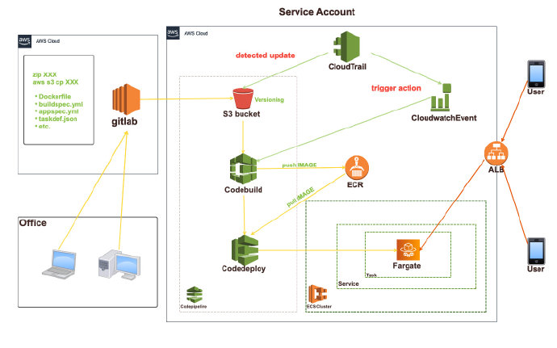
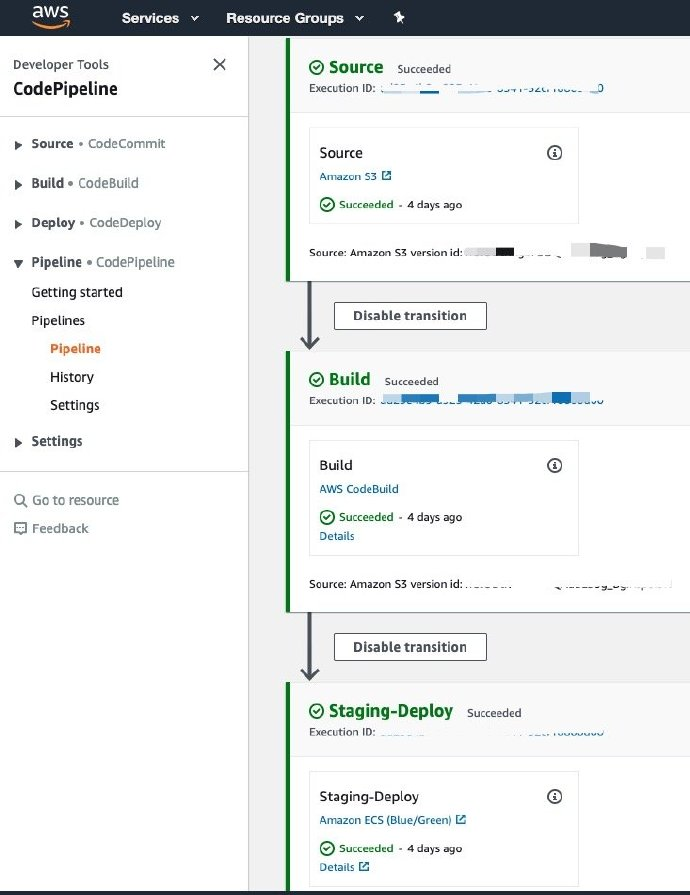

気がついたら、2020年の1月ってブログ更新ナーシング！これはヤバい……
何とかしないと、もうこのブロクの更新が停止しまいそうー
とりあえず、書こう。
経緯
とある新規プロダクトは基盤を普通のEC2からECSに変えたいとの要望があって、
一週間漬け込んで、環境構築とdockerイメージのCI/CDパイプライン作成に投げました。
全体環境はterraformで構築し、今回はその一部であるCI/CDパイプラインについて、お話させていただきます。
全体設計
まずは、全体イメージ図から見てみましょうー

ご覧の通り、developerとして、必須ファイルをgitlabの指定リポジトリにpushし、
masterブランチにmergeされたら、あとの工程は自動的に回します。
シンプルかつカンタン、万々歳〜
gitlabステージ
このステージで、Dockerfileを含め、
image buildが必要とするすべてのファイルをzipに固めて、s3の指定バケットに転送する。
ここは、gitlab-ci機能を利用
WebHookでカバーできない?
githubだと簡単にできるが、あいにくうちはプライベートのgitlabを使っており、
止む得なく、gitlab+S3+cloudtrail+cloudwatch eventのセットで対応することにした。
必要ファイルとvars
- gitlab CI/CDで（S3にputするアクションはgitlab-ciを利用）
- AWS_ACCESS_KEY
- AWS_SECRET_KEY
- サービスアカウント内app_deployユーザのクレデンシャル、infraに聞く
- SSH_PRIVATE_KEY
- 該当リポジトリをpullできるユーザのkey
- .gitlab-ci.ymlファイル内(適宜に変更)
- UPLOAD_REGION : ap-northeast-1(※東京リージョン)
- UPLOAD_BUCKET : code-pipeline
- UPLOAD_FOLDER : docker-image
- UPLOAD_FILE_ALL : docker_image.zip(※出力zipファイルのフルネーム)
- Dockerfile
- buildspec.yml(buildステージ必須)
- taskdef.json(deployテージ必須)
- appspec.yml(deployテージ必須)
gitlab-ci.ymlサンプル
1 | #とにかくalpineのイメージしてしましょう、ここは社内のURLので |
ご察しの通り、branchがmasterにmergeした時、CIが回され、
すべてのファイルをzipに固め、s3の指定bucketにコピーする仕組みとなっています。
成果物
- Dockerfileを含め、工程必要ファイル一式をまとめたzipファイル
buildステージ
このステージで、copyされたzipファイルを基づいて、docker imageをbuildする。
必要ファイルとvars
- CODE_PACKAGE_NAME: “docker_image.zip”(※S3指定バケット内、gitlab-ci出力されたファイル)
- GIT_COMMIT_HASH_FILE: “git-commit-hash.txt”(※image最新タグを保存する一時ファイル名)
- buildspec.yml(build工程定義ファイル)
buildspec.ymlサンプル
1 | version: 0.2 |
成果物
- docker image
- {ECR_URL}:latest
- {ECR_URL}:commit_hash
- next stage用ファイル
- imageDetail.json
- taskdef.json
- appspec.yml
deployステージ
このステージで、buildされたimageをECSクラスターにdeploy.
appspec.ymlとtaskdef.jsonの組み合わせで、deploy先を特定し、
imageDetail.jsonはimageのURL（tagを含む）を特定する。
必要ファイルとvars
- taskdef.jsonファイル内
- 実行ARN
- containname
- cloudwatch logグループ関連name
- taskdefinitionのfamily名
- appspec.ymlファイル内
- LBのコンテナ名
appspec.ymlサンプル
1 | version: 0.0 |
taskdef.jsonサンプル
1 | { |
成果物
- Blue/Green deployを経て、置き換えられたコンテナ
最終成果物
パイプライン

WebPage
予め用意したALBにアクセスすると、カスタマイズしたnginx画面が表示された。
これで大成果です！お疲れ様〜